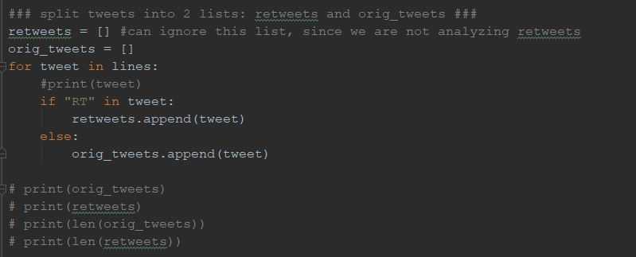

Word Frequency Analysis of Trump’s Most Recent Tweets
By Gianna Tricola and Michael Custance 
By Gianna Tricola and Michael Custance


Useful for linguistic analyses as they:
give insight into the vernacular of individuals and groups of people in specific regions during particular periods of time.
provide information on trending topics


